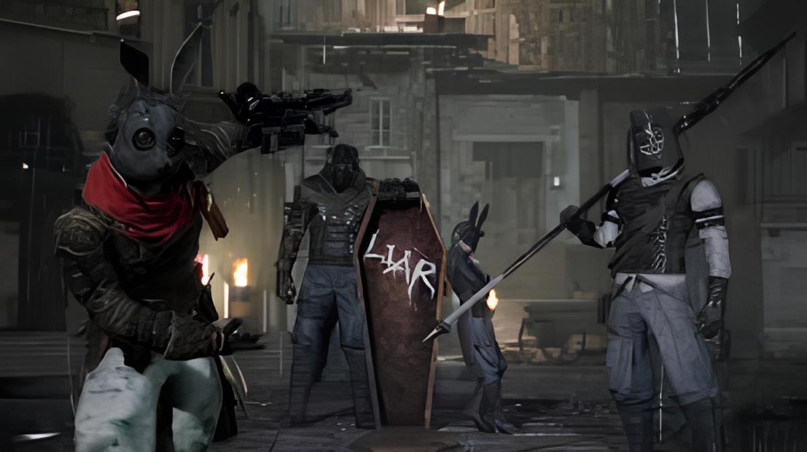

Personagem principal, baseado no Pinóquio filho de Geppeto

SoulsLike, onde morrer é normal e com a morte vem o recomeço e aprendizado, exige perseverança e resiliência.

Em Krat, a verdade e a mentira são mais do que simples escolhas morais; elas moldam a sua própria humanidade. O jogo explora o peso de nossas decisões e o que realmente significa ser humano em um mundo tomado pela tragédia.
A narrativa se passa em Krat, uma outrora próspera cidade da Belle Époque que enriqueceu graças à descoberta do milagroso mineral Ergo e à invenção das Marionetes. No entanto, a utopia ruiu quando o "Frenesi das Marionetes" fez com que os autômatos se rebelassem, massacrando a população. Despertando em meio ao caos, você é uma criação única de Geppetto. Sua missão é lutar pelas ruas manchadas de sangue para encontrar seu criador, deter a ameaça mecânica e desvendar os segredos sombrios por trás da praga da Petrificação que assola a cidade.


Diferente das marionetes comuns, que são rigidamente programadas pelo "Grande Pacto" para nunca mentir, P possui uma característica extraordinária: o livre-arbítrio. Ao longo de sua jornada, você será confrontado com dilemas onde dizer a verdade reconfortante ou uma mentira piedosa afetará diretamente suas "Engrenagens Internas". O quanto você mente altera o nível de humanidade do seu personagem, mudando a forma como os cidadãos interagem com você e determinando qual dos múltiplos finais da história você irá desbloquear.
Uma gangue de mercenários implacáveis que domina o Distrito de Malum. O combate é um verdadeiro teste de paciência e controle de grupo, onde o Irmão Mais Velho usa sua força bruta enquanto os irmãos menores entram na arena para aplicar efeitos de status e ataques rápidos pelas costas.

O pesadelo do Distrito de Malum. Eles não lutam com honra, lutam para vencer.